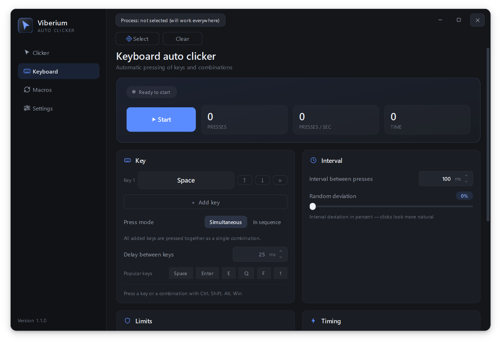
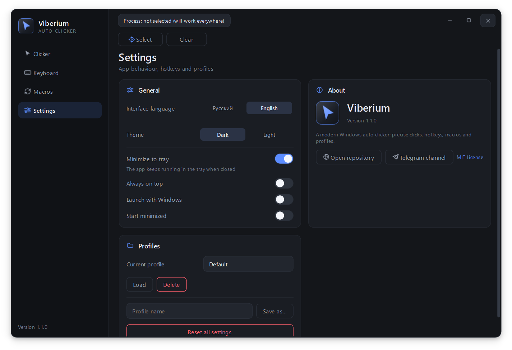

Auto clicker for Windows that stays out of your way
Mouse clicks, key presses and shortcuts, macro recording, global hotkeys and a target-window mode that pauses when the app you care about is not focused. English and Russian interface, dark and light themes.

Features
Everything for repetitive actions
One tool instead of five utilities: clicker, keyboard, macros and hotkeys.
Mouse auto clicker
Left, right and middle buttons, single, double and triple clicks. Interval, jitter, hold duration and limits.
Keyboard and combinations
Several keys at once, shortcuts with Ctrl, Shift, Alt and Win. "Simultaneous" and "In sequence" press modes.
Macros
Record clicks, mouse movement and keystrokes. Your own playback speed, repeats, JSON import and export.
Global hotkeys
Start, stop, hold to run and an emergency stop on F8. They keep working when the window is in the tray.
Target window
Clicks only inside the selected program. While that window is not focused, the clicker waits.
Two themes, two languages
Dark and light, English and Russian. Named setting profiles for different tasks.
Interface
Clean and precise
No overloaded menus: everything you need on four screens.

Download
Three steps and you are done
No installer, no registration and no hidden payments.
Get the archive
Viberium-windows.zip from the releases page.
Extract everything
Viberium.exe and the _internal folder must stay together.
Run it
Open Viberium.exe. Settings live in %APPDATA%\Viberium.
FAQ
Frequently asked questions
Short answers to what people ask most often.
Windows says the publisher is unknown. Is it safe?
Yes. The app is not signed with a paid certificate, so SmartScreen warns you. Click "More info" → "Run anyway". The source code is public, so you can check it yourself.
Is it really free?
Yes, completely. The project is released under the MIT licence: use it, study it and change it.
Clicks go to the wrong window. How do I fix that?
Pick a target process on the "Clicker" or "Keyboard" page. While the chosen window is not in focus, the auto clicker does nothing.
Can I set up keyboard combinations?
Yes. On the "Keyboard" page add several keys and shortcuts with Ctrl, Shift, Alt and Win, reorder them and choose the press mode.
Where do I find updates?
In the Telegram channel @viberium_autoclicker and in the Releases section on GitHub. There is a Russian version of this site too: RU.